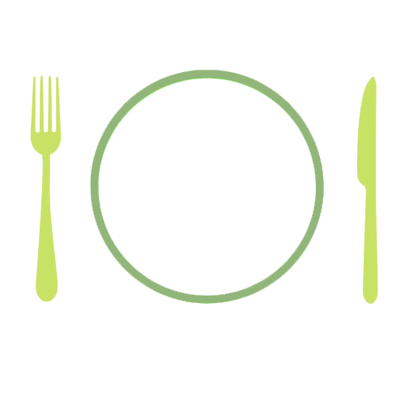
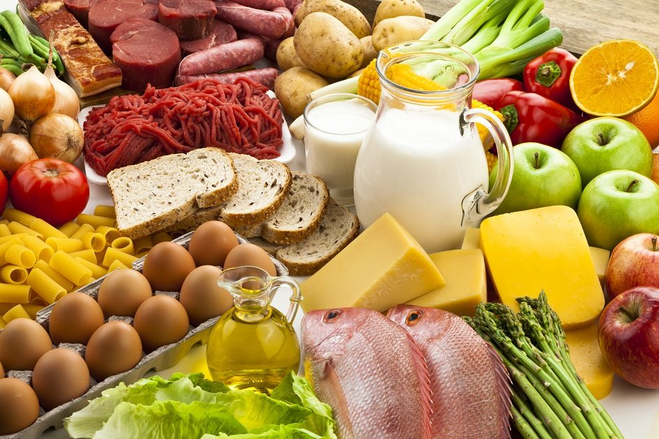

Você sabia?
30% dos alimentos produzidos no mundo são descartados, desde a cadeia de produção até os consumidores finais, segundo dados da Organização das Nações Unidas para a Alimentação e Agricultura (FAO).
Sobre o SRA
O SRA (Sistema de Reserva de Alimentos) é um site direcionado à restaurantes de instituições de ensino a fim de automatizar a relação entre a refeição e os estudantes, e, consequentemente, reduzir ou até anular o desperdício de alimentos nestas.
Desenvolvedor